1. 왜 전문 LLM 서빙 프레임워크가 필요한가
CH7까지는 시스템 설계·최적화 이론을 다뤘습니다. CH8부터는 이 이론을 실제로 구현하는 프레임워크 계층으로 초점을 옮깁니다. TensorFlow Serving, TorchServe, NVIDIA Triton 같은 범용 모델 서빙 스택은 이미지 분류나 추천 모델처럼 "입력 하나 → 출력 하나"가 한 번의 순전파로 끝나는 모델에는 잘 맞습니다. 하지만 LLM은 이 가정을 정면으로 깨뜨리는 5가지 고유한 과제를 갖습니다.
- 자기회귀 생성(Autoregressive Generation): 출력이 한 번에 나오지 않고 토큰 단위로 순차 생성되며, 각 요청이 몇 토큰만에 끝날지 미리 알 수 없습니다 — 범용 스택이 가정하는 "고정된 단일 순전파" 모델과 근본적으로 다릅니다.
- 컨텍스트 길이 폭증: 요청마다 입력 길이가 몇 토큰부터 수십만·백만 토큰까지 천차만별이고, 길이에 따라 KV 캐시 메모리가 동적으로 늘어나 중대한 병목 지점이 됩니다.
- 연속 배칭(Continuous Batching)의 필요성: 요청마다 입출력 길이가 크게 다르므로, 정적 배칭 전략은 GPU를 제대로 활용하지 못합니다.
- 스트리밍 요구: 사용자는 첫 토큰까지의 시간(TTFT)이 수백 밀리초 이내이길 기대하며, 토큰 단위 실시간 스트리밍도 요구합니다.
- 자원 활용 압박: GPU는 비쌉니다. 파편화나 유휴 토큰으로 인한 GPU FLOPS 낭비는 대규모 환경에서는 용납되지 않습니다.
이런 요구를 충족시키기 위해 vLLM, TensorRT-LLM, SGLang, llama.cpp 같은 전문 LLM 서빙 프레임워크가 등장했습니다. 이들은 페이지 단위 KV 캐싱, 연속 배칭, LLM 전용 양자화, 추측 디코딩 같은 혁신으로 이 문제들을 해결해 처리량 증가와 지연시간 감소를 동시에 달성합니다.
범용 서빙 스택은 "박스 하나씩 정해진 규격으로 처리하는 택배 창고"에 가깝습니다. LLM 서빙 프레임워크는 "손님마다 주문한 요리와 먹는 속도가 다르고, 한입씩 먹을 때마다 바로바로 내와야 하는 실시간 주방"에 더 가깝습니다 — 창고 운영 방식을 그대로 주방에 적용하면 자리가 금방 막혀버립니다.
1.1 두 계층으로 보는 서빙 스택: 엔진 티어와 오케스트레이션 티어
이 장에서 다룰 vLLM·TensorRT-LLM·SGLang·llama.cpp를 포함해, 실제 프로덕션 LLM 서빙 스택은 역할이 뚜렷이 다른 두 계층으로 나뉩니다.
① 엔진 티어(Engine Tier) — 실제로 토큰을 생성하는 계층입니다. vLLM·SGLang·TensorRT-LLM·TGI(Text Generation Inference) 네 프레임워크 모두 내부적으로는 스케줄러·KV 캐시·커널이라는 같은 3단 구조를 갖습니다.
| 프레임워크 | 소속/생태계 | 포지셔닝 |
|---|---|---|
| vLLM | PyTorch Foundation | 가장 폭넓은 하드웨어 지원(Intel·NVIDIA·AMD·TPU·AWS 실리콘까지) |
| SGLang | 독립 오픈소스 | 대규모 클러스터 실전 검증 — DeepSeek 모델을 96개 GPU로 재현·서빙한 사례로 유명 |
| TensorRT-LLM | NVIDIA | NVIDIA GPU 전용, 해당 하드웨어에서 최고 성능 지향 |
| TGI | Hugging Face | Hugging Face Hub 생태계와 긴밀히 통합(모델을 Hub에서 바로 서빙) |
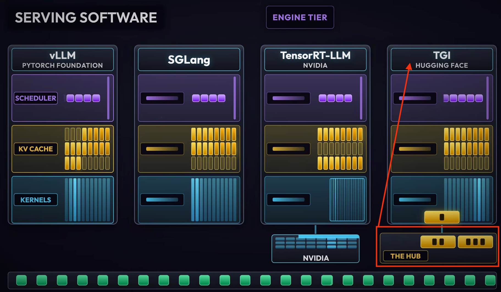
② 오케스트레이션 티어(Orchestration Tier) — 엔진 티어 위에 얹혀서 여러 노드에 걸친 분산 서빙을 조율하는 계층으로, NVIDIA Dynamo·llm-d(Kubernetes-native)가 대표적입니다. 이 계층 자체는 엔진이 아니라 스케줄러/라우터입니다 — 실제 연산(토큰 생성)은 언제나 각 노드의 엔진 티어가 담당합니다.
🚦 "NO ENGINE, NO TOKEN"
오케스트레이션 계층(Dynamo, llm-d 등)은 그 자체로는 추론 엔진을 실행하지도, 토큰을 직접 생성하지도 않습니다. 예를 들어 노드 1·2를 Prefill Pool, 노드 3·4를 Decode Pool로 나눠 요청을 분산시키는 것(CH7에서 다룬 Prefill-Decode 분리 서빙의 실제 배치 형태)까지가 오케스트레이션 계층의 역할이고, 그렇게 라우팅된 요청을 실제로 처리해 토큰을 만들어내는 것은 각 풀 안의 엔진 티어(vLLM 등)입니다. "오케스트레이션 계층이 다운되면 라우팅만 멈출 뿐 엔진은 살아있다"와 "엔진이 다운되면 오케스트레이션이 아무리 잘 작동해도 토큰은 한 개도 안 나온다"는 이 계층 구분의 핵심을 보여주는 대비입니다.
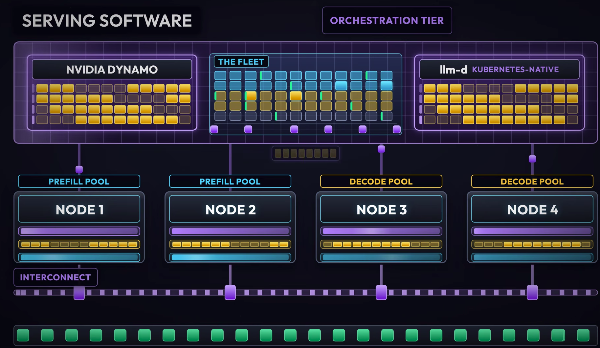
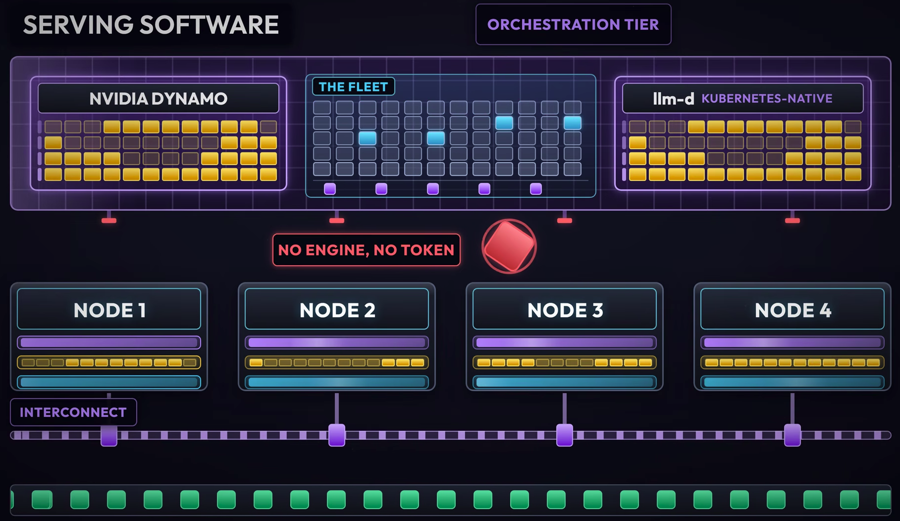
단일 요청의 decode 한 스텝은 GPU가 고대역폭 메모리(HBM)에서 그 토큰에 필요한 가중치 전체를 읽어와 얇은 행렬-벡터 곱셈 한 번을 수행하는 것과 같습니다 — 연산 강도(이동한 바이트당 수행한 유용한 연산량)가 매우 낮아 텐서 코어는 사실상 놀고, 칩은 대부분의 시간을 메모리 대기에 씁니다. 이 절에서 다루는 배칭, 연속 배칭, PagedAttention, 청크드 프리필, PD 분리, 프리픽스 캐싱은 겉보기엔 서로 다른 기법이지만, 전부 "모델 가중치를 한 번 완전히 읽을 때마다 토큰을 몇 개 만들어내는가"라는 동일한 질문에 대한 답입니다. 요청을 여러 개 묶어 같은 가중치로 동시에 여러 토큰을 계산하면(얇은 행렬-벡터곱 → 두꺼운 행렬곱) 연산 강도가 대략 묶은 요청 수만큼 증가해, memory-bound였던 decode가 GPU 연산 자원을 실제로 쓰는 영역으로 이동합니다.
📚 역사: 이 모든 것은 어디서 시작됐는가 — Orca와 PagedAttention
지금은 당연해 보이는 "연속 배칭(continuous batching)"은 원래 당연하지 않았습니다. 2022년 이전의 서빙 시스템은 요청 단위 정적 배칭을 썼습니다 — 배치에 묶인 요청 중 가장 긴 것이 끝날 때까지 짧게 끝난 요청의 GPU 슬롯도 놀려야 했습니다. 예를 들어 동시에 도착한 4개 요청이 각각 8·24·60·512 디코딩 스텝을 필요로 한다면, 정적 배칭은 배치 전체를 가장 긴 요청(512스텝)이 끝날 때까지 붙들고 있습니다 — 8스텝짜리 요청이 끝난 뒤에도 그 슬롯은 남은 504스텝 내내 낭비되고, 마지막 452스텝 동안은 4개 슬롯 중 3개가 놀며, 전체 배치가 실제로 전달하는 유효 작업량은 이론적으로 가능한 양의 1/3에도 못 미칩니다 [6]. 서울대 연구진의 논문 Orca(OSDI 2022) [1]가 여기서 "요청이 아니라 반복(iteration) 단위로 배치 구성을 매번 바꾼다"는 이터레이션 수준 스케줄링을 처음 제시했고, GPT-3 175B 기준 동일 지연시간에서 NVIDIA FasterTransformer 대비 36.9배 처리량을 보고했습니다(절대 수치로는 토큰당 190ms 지연시간 목표를 맞추는 조건에서 FasterTransformer 초당 0.185개 요청 대 Orca 초당 6.81개 요청 [6]).Orca의 두 번째 핵심 기여는 선택적 배칭(Selective Batching) [6]입니다. 선형 투영·레이어 정규화·활성화 함수처럼 토큰이 어느 요청에서 왔는지와 무관한 연산은 요청 경계를 무시하고 모든 토큰을 하나의 평면(flat) 텐서로 쌓아 한 번에 처리하고, 서로 다른 길이의 KV 캐시를 봐야 하는 Attention만 요청 단위로 쪼개 개별 실행합니다. 이 덕분에 진행 단계(길이)가 서로 다른 요청들도 하나의 배치로 묶을 수 있어, 반복 단위 스케줄링이 실제로 성립합니다.
그런데 Orca도 KV 캐시를 연속된(contiguous) 메모리 블록으로 미리 예약해야 했기 때문에, 실제 사용량보다 훨씬 크게 잡은 메모리가 낭비되는 문제가 남아 있었습니다. UC버클리의 PagedAttention 논문(SOSP 2023, vLLM의 핵심 아이디어) [2]은 이 문제를 OS의 가상 메모리 페이징처럼 KV 캐시를 작은 블록 단위로 쪼개 비연속적으로 관리하는 방식으로 풀었습니다. 그 결과 기존 시스템에서 60~80%에 달하던 메모리 낭비를 4% 미만으로 줄였고(뒤집어 말하면 실제 토큰 데이터가 차지하는 비율이 기존 20.4~38.2%에서 96.3%까지 상승 [6]), 이 메모리 절약이 곧바로 더 큰 배치 크기로 이어져 Orca·FasterTransformer 대비 2~4배, HuggingFace Transformers 대비 최대 24배 높은 처리량을 달성했습니다. "스케줄링을 잘게 쪼갠 것(Orca)"과 "메모리를 잘게 쪼갠 것(PagedAttention)"이 합쳐져 오늘날 LLM 서빙 프레임워크의 토대가 된 셈입니다.
2. vLLM 심층 분석
이 장에서 가장 널리 쓰이는 프레임워크인 vLLM을 깊이 있게 다룹니다 — vLLM의 내부 동작을 이해하면 다른 프레임워크를 평가하기도 훨씬 쉬워집니다.
2.1 두 가지 사용 방식
① LLM 클래스(오프라인 배치 추론, 인프로세스 라이브러리):
from vllm import LLM, SamplingParams
llm = LLM(model="Qwen/Qwen3-7B-Instruct", trust_remote_code=True,
dtype="float16", max_model_len=32768, gpu_memory_utilization=0.8)
outputs = llm.generate(prompts, sampling_params)② API 서버(OpenAI 호환, 온라인 서빙):
vllm serve Qwen/Qwen3-7B-Instruct --dtype bfloat16 \
--max-model-len 32768 --gpu-memory-utilization 0.8
curl http://localhost:8000/v1/chat/completions \
-d '{"model":"Qwen/Qwen3-7B-Instruct","messages":[...],"stream":true}'LLM 클래스는 세밀한 제어·낮은 오버헤드·기존 파이프라인과의 손쉬운 통합을 제공하고, API 서버는 멀티 클라이언트·프로덕션 사용·스트리밍을 위한 바로 사용 가능한 네트워크 엔드포인트를 제공합니다.
2.2 내부 아키텍처 계층
flowchart TD
A["LLMEngine\n(공개 API, 요청 생명주기 관리)"] --> B["EngineCore\n(내부 루프, 전체 파이프라인 오케스트레이션)"]
B --> C["Scheduler\n(자원 배분 '교통 관제탑')"]
C -->|"SchedulerOutput\n(작업 지시서)"| D["ModelExecutor\n(다중 워커 프로세스 조율)"]
D --> E["GPUWorker\n(프로세스별 디바이스/모델 생명주기)"]
E --> F["GPUModelRunner\n(실제 신경망 순전파 실행)"]
- LLMEngine: 사용자가 직접 상호작용하는 최상위 진입점이자 공개 API. 요청 처리 파이프라인 오케스트레이션, 요청 큐·설정 관리 등 전체 요청 생명주기를 관리합니다.
- EngineCore: 모델 익스큐터·출력 프로세서·스케줄러를 통합하는 중앙 오케스트레이터("내부 루프")입니다.
- Scheduler: 전체 추론 파이프라인의 "교통 관제사(traffic controller)" 역할을 하며, GPU 메모리·KV 캐시 블록·처리 용량이라는 제한된 자원을 경쟁 중인 요청들 사이에 효율적으로 배분합니다. 토큰 스케줄링·동적 배칭·프리픽스 캐싱·청크드 프리필 같은 모델 무관(model-agnostic) 최적화를 담당하며, 모델별 최적화는 ModelExecutor/GPUWorker가 맡습니다. Scheduler는 자신의 계획을
SchedulerOutput이라는 데이터 구조에 캡슐화합니다 — "여기 처리할 요청 배치가 있다. 각 요청이 받을 토큰 수, 입력 데이터·파라미터, 할당된 메모리 블록, 특별 요구사항이 여기 있다"는 작업 지시서입니다. - ModelExecutor / GPUWorker / GPUModelRunner: vLLM은 각 모델을 별도 프로세스(그룹)에서 호스팅하기 때문에 이 3단 계층으로 프로세스 간 통신·분산 워커 조율·모델 실행을 관리합니다. ModelExecutor가 여러 워커를 조율하고, GPUWorker가 각 프로세스에서 디바이스·모델 생명주기를 관리하며, GPUModelRunner가 실제로 신경망을 실행합니다.
이 계층 구조는 vLLM 공식 문서 및 Aleksa Gordić의 "Inside vLLM: Anatomy of a High-Throughput LLM Inference System" 블로그 시리즈 [3]의 설명과 일치함이 교차검증으로 확인됐습니다.
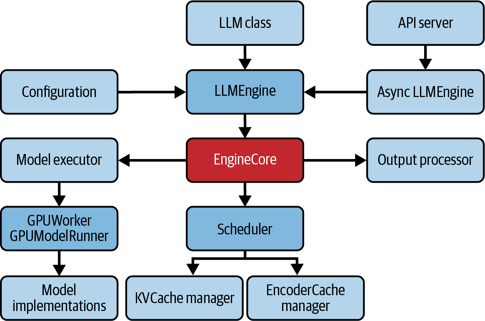
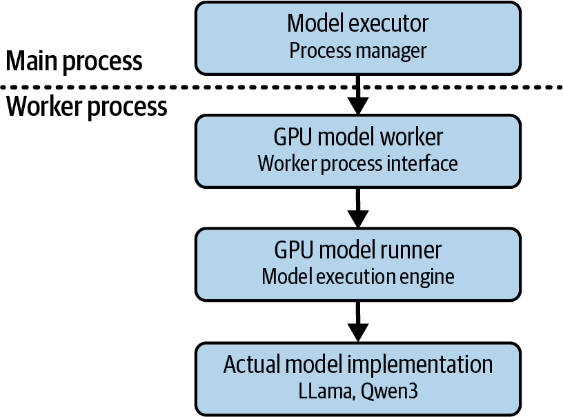
2.3 모델 초기화 워크플로우 (멀티프로세스 워커 포함)
# 단일 노드, 다중 GPU 배포를 위한 멀티프로세스(MP) 백엔드 예시
# (여러 머신에 걸친 배포는 "ray" 백엔드 선택 가능)
llm = LLM(
model="Qwen/Qwen2.5-7B-Instruct",
tensor_parallel_size=4, # 워커(GPU) 4개
distributed_executor_backend="mp" # 멀티프로세스 실행기
)- 메인 프로세스 초기화:
LLM()생성 시 LLMEngine, Scheduler, KVCacheManager, MultiProcessExecutor 등 주요 컴포넌트를 메인 프로세스에서 기동합니다. - 워커 프로세스 그룹 생성: MultiProcessExecutor가 N개 워커 프로세스를 생성(spawn)하고, 메인→워커 명령 전달용
rpc_broadcast_mq메시지 큐를 설정합니다. - 워커 프로세스 초기화: 각 워커가 GPUWorker를 실행해 CUDA 디바이스 설정, 프로세스 간 통신(NCCL 등) 수립, 모델 로드를 진행하고, 워커→ModelExecutor 결과 회신용
worker_response_mq를 유지합니다. - 모델 준비 및 로드: GPUModelRunner가 모델 레지스트리에서 구현체를 조회(예: Qwen → Qwen3ForCausalLM)해
__init__을 호출하고 가중치를 GPU에 로드합니다.
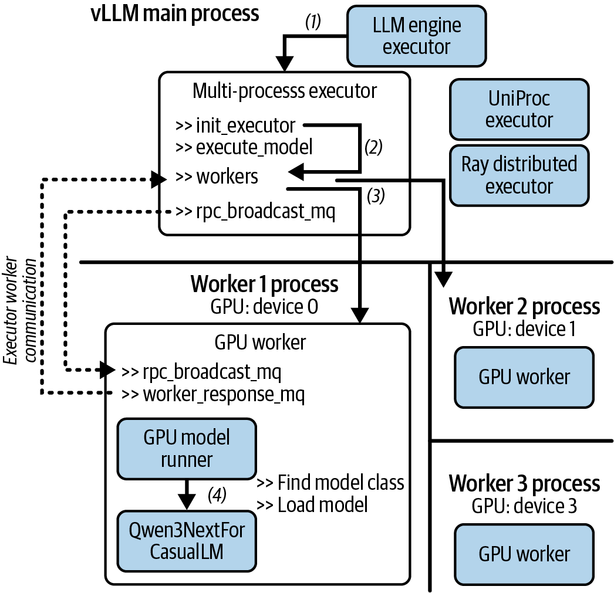
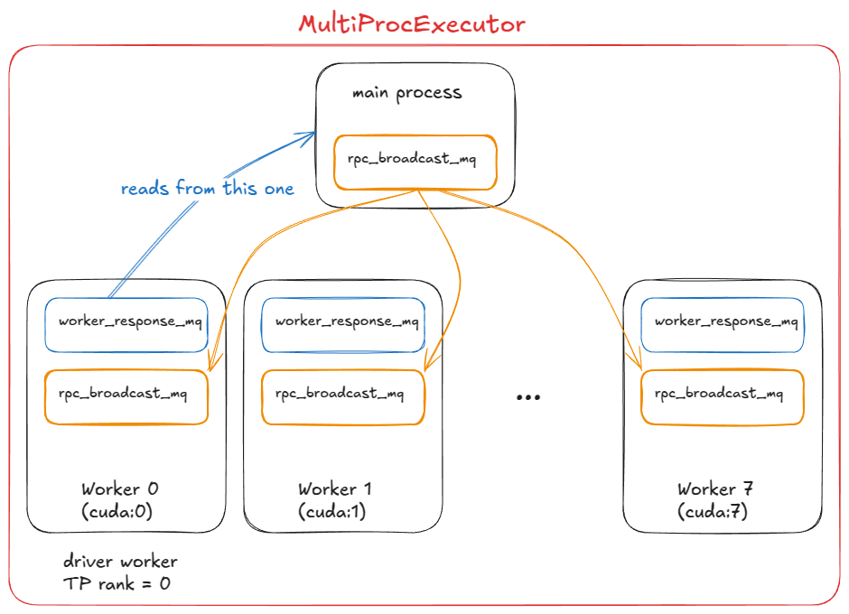
2.4 생성 요청 실행 워크플로우
| 단계 | 담당 컴포넌트 | 역할 |
|---|---|---|
| 1 | Processor | 입력 프롬프트 토큰화 포함, 원시 입력 검증·전처리 → Request 객체 생성 |
| 2 | LLMEngine → EngineCore → Scheduler | 다음 배치·토큰 결정, 페이지드 어텐션·연속 배칭 등 최적화 적용 |
| 3 | MultiProcessExecutor → GPU Worker | 실제 모델 forward pass 실행 (SchedulerOutput 기반) |
| 4 | Output Processor | 모델 출력 → 최종 응답(스트리밍 텍스트) 변환 |
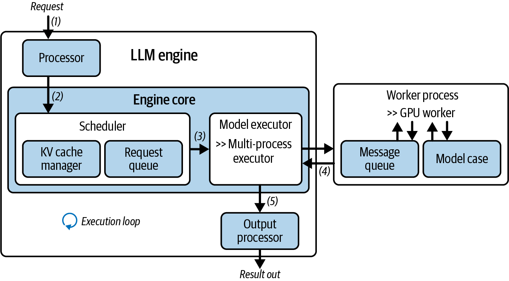
📌 핵심: 역할이 명확히 분리되어 있습니다. Scheduler는 "언제, 무엇을, 어떻게 배치할지"를 결정하는 서빙 최적화(계획) 담당이고, GPUWorker는 실제 연산(모델 실행)만 담당합니다. 이 관심사 분리 덕분에 vLLM은 배칭·스케줄링 최적화를 GPU 실행 로직과 독립적으로 개선할 수 있습니다. 모델 초기화(2.3절)와 요청 실행(2.4절)은 서로 다른 두 개의 4단계 프로세스이므로 혼동하지 않도록 주의해야 합니다 — 초기화는 "GPU에 모델을 올리는 과정"이고, 실행은 "이미 올라간 모델로 한 번의 생성 요청을 처리하는 과정"입니다.
2.5 Scheduler 심층 분석
Scheduler는 vLLM 추론 파이프라인에서 생성 요청을 실행하는 중앙 교통 관제탑 역할을 하며, 5가지 핵심 책임을 가집니다.
- 자원 오케스트레이션: WAITING/RUNNING 큐를 관리하고, GPU 메모리·KV 캐시·토큰 예산 기반으로 동적 결정을 내립니다.
- 토큰 단위 스케줄링: prefill/decode를 분리하지 않고 요청이 아닌 토큰 단위로 스케줄링해 더 세밀하게 제어합니다.
- 최적화 통합 허브: 프리픽스 캐싱, 추측 디코딩, 청크드 프리필, 분산 KV 캐시 전송을 상황에 맞게 적응적으로 적용합니다.
- 동적 부하 분산: 도착·완료·선점(preemption) 등 이벤트에 실시간 대응해 지연시간-처리량 균형을 맞춥니다.
- 생명주기 관리: FCFS(선입선출)나 우선순위 정책을 적용하고, 자원 부족 시 낮은 우선순위 요청을 선점합니다.
스케줄링 사이클: ① 신규/재개/실행중/선점된 요청을 모두 수집하고 가용 토큰·인코더 예산을 갱신 → ② RUNNING 요청 우선 처리(이미 KV 캐시를 점유 중이므로) — 이 과정에서 청크드 프리필·프리픽스 캐싱·추측 디코딩을 적용하고 필요 시 선점 → ③ WAITING 요청 처리(남은 예산 내에서 활성화, 동일한 최적화 혜택) → ④ 후처리(LoRA 어댑터 추적, 멀티모달 인코더 입력 준비, 추측 토큰 확정) → ⑤ SchedulerOutput 생성.
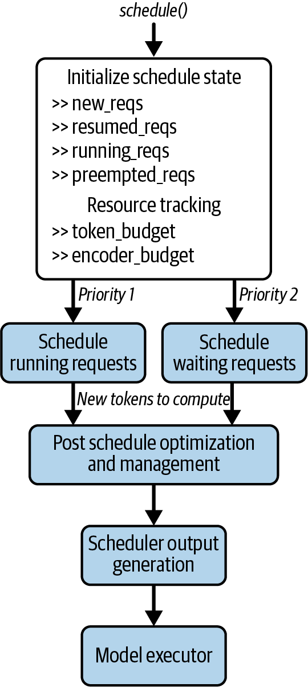
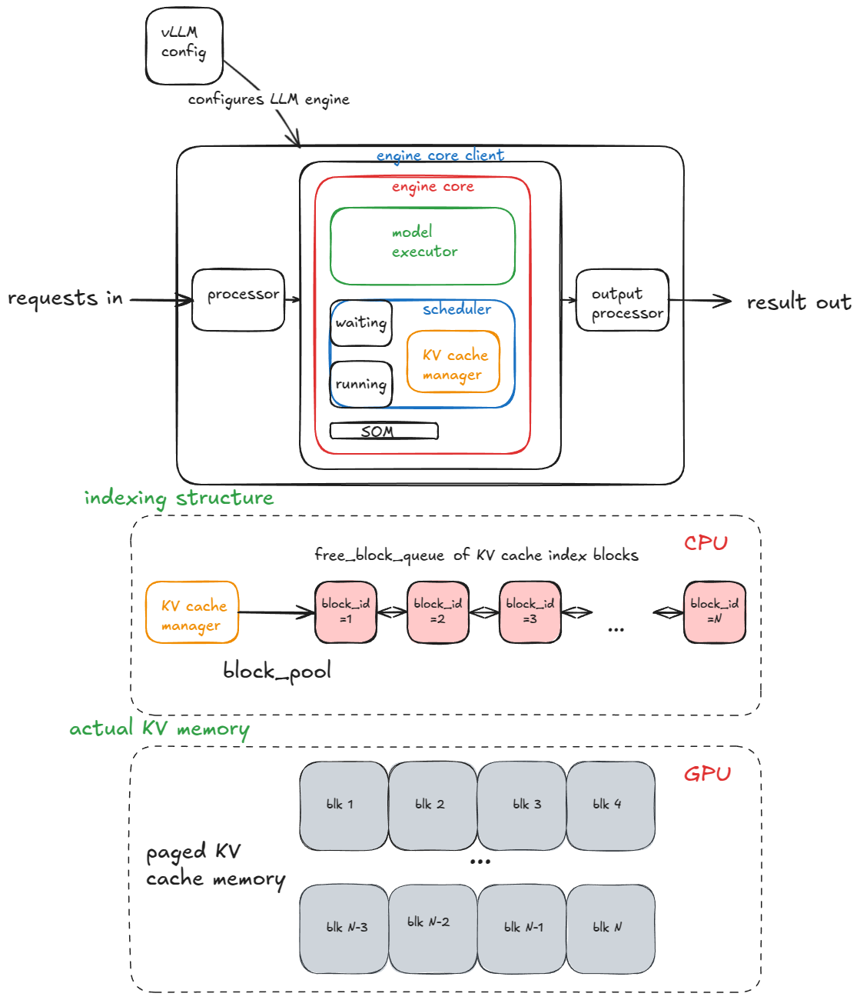
핵심 설계 원칙 — "우선순위 결정"과 "토큰 스케줄링"의 분리: 큐(WAITING/RUNNING)는 요청의 처리 순서를 결정하고, num_computed_tokens(이미 처리된 토큰 수)와 num_tokens_with_spec(프롬프트·출력·추측 토큰을 포함해 처리해야 할 총 토큰 수)의 차이는 각 요청이 이번 스텝에 몇 개 토큰을 처리할지를 결정합니다.
while req_index < len(self.running) and token_budget > 0:
request = self.running[req_index]
num_new_tokens = (request.num_tokens_with_spec +
request.num_output_placeholders -
request.num_computed_tokens)이 둘을 분리했기 때문에, 다양한 요청 우선순위 정책과 실행 최적화 기법을 하나의 통합된 프레임워크 안에서 결합할 수 있습니다. 청크드 프리필은 long_prefill_token_threshold를 넘지 않도록 이번 스텝의 새 토큰 수를 제한하는 방식으로, 프리픽스 캐싱은 이미 계산된 KV 캐시 블록을 로컬/원격 캐시에서 재사용하는 방식으로 구현됩니다 — 결국 두 최적화 모두 "이번 스텝에 실제로 계산해야 할 토큰 범위"를 정교하게 좁히는 동일한 원리의 다른 적용 사례입니다.
① KV 캐시 선점 시 스왑 vs 재계산: GPU 메모리가 부족해지면 vLLM은 한 요청의 KV 캐시를 블록 전체를 한 번에 축출합니다(attention은 어차피 모든 블록을 동시에 필요로 하므로 "전부 아니면 전무"). 복구 방법은 두 가지입니다 — 스왑(축출된 블록을 CPU 메모리로 옮겼다가 되돌리는 방식, PCIe 버스 대역폭 비용)과 재계산(캐시를 버리고 이미 생성된 출력 토큰을 원래 프롬프트 뒤에 이어붙여 단 한 번의 프리필로 전체 KV 캐시를 다시 만드는 방식, GPU 연산 비용). 토큰을 하나씩 다시 만드는 것보다 훨씬 저렴해 재계산이 스왑보다 더 빠른 경우가 많으며, 어느 쪽이 유리한지는 그 머신의 CPU-GPU 대역폭과 여유 연산 자원 비율에 달려 있습니다.
② 멀티테넌트 공정성(Virtual Token Counter): 하나의 배포 환경을 여러 테넌트가 함께 쓸 때는 요청 "개수"만으로 공정성을 보장할 수 없습니다 — 한 테넌트가 다른 테넌트보다 수백 배 많은 토큰을 소비할 수 있기 때문입니다. Sheng 등이 제안한 VTC(Virtual Token Counter) [7]는 각 테넌트의 누적 입·출력 토큰량을 추적해 가장 적게 서비스받은 테넌트를 우선 스케줄링하는 공정 스케줄러입니다.
③ 입장 제어(Admission Control): 시스템 용량을 넘는 요청을 전부 수락하면 전원이 마감 시간을 놓치는 과부하에 빠집니다. 제시간에 끝내지 못할 것으로 예측되는 요청을 미리 거부·연기해야 하며, Kimi(Moonshot AI)의 서빙 인프라 Mooncake [8](CH7에서 다룬 KV 캐시 중심 PD 분리 아키텍처)가 이런 예측 기반 조기 거부 정책을 실제로 쓰는 대표 사례입니다 — "처리량을 최대화하는 스케줄링"과 "마감을 지킬 요청만 애초에 받는 입장 제어"는 서로 다른 층위의 문제임을 보여줍니다.
2.6 vLLM의 계층적 최적화 전략 (4계층)
vLLM의 핵심 설계 철학은 "최적화는 그것이 속한 올바른 계층에서 이루어져야 한다"는 것입니다. LLM 아키텍처와 하드웨어가 매우 빠르게 변화하기 때문에, 특정 모델·하드웨어에 최적화를 하드코딩하면 시스템이 금방 낡아버립니다.
flowchart TD
A["Scheduler\n시스템 전반·모델 무관\n(배칭·캐싱·공정성)"] --> B["ModelExecutor\n모델 아키텍처별\n(융합 어텐션 커널, 멀티모달 인코더)"]
B --> C["모델 레이어\n컴포넌트별\n(KV 캐시 재사용, FlashAttention)"]
C --> D["CustomOp\n하드웨어별\n(CUDA 커널, 양자화 연산자)"]
위로 갈수록 범용적·모델 무관적이고, 아래로 갈수록 특정 하드웨어에 특화됩니다. 각 계층이 자신의 관심사만 처리하므로 한 계층의 변경이 다른 계층에 영향을 주지 않습니다(예: 새 GPU가 나와도 Scheduler·모델 로직은 그대로 두고 CustomOp만 확장). 결과적으로 vLLM은 새로운 모델 아키텍처나 하드웨어가 등장해도 전체 시스템을 재설계할 필요 없이 해당 최적화를 알맞은 계층에 "끼워 넣기"만 하면 되는 미래 대비적(future-proof) 구조를 갖추게 됩니다. 이 철학은 7장에서 다룬 NVIDIA Dynamo의 4계층 스택(CUDA 커널→실행 엔진→캐시 관리→오케스트레이션)과도 사상적으로 유사합니다.
3. TensorRT-LLM
TensorRT-LLM은 NVIDIA가 만든 자사 GPU 전용 고성능 LLM 추론 라이브러리입니다.
- 핵심 방식: 모델 체크포인트를 고도로 튜닝된 TensorRT 엔진으로 컴파일합니다. 이 과정에서 그래프 최적화, 커널 퓨전, 정밀도별 커널 선택 등이 이뤄져 특정 GPU 세대에 맞춤 최적화된 실행 엔진이 만들어집니다.
- 주요 기능: in-flight batching(vLLM의 연속 배칭에 대응), 페이지드 KV 캐시, 추측 디코딩, 다중 정밀도 양자화(FP8/FP4/INT4/INT8), 텐서/파이프라인 병렬화.
- 생태계 통합: NVIDIA Dynamo, Triton Inference Server와 긴밀히 연동됩니다.
- API 사용성: vLLM과 거의 동일한 고수준
LLM(model=...)/generate()인터페이스를 제공합니다.
llm = LLM(model="Qwen/Qwen3-7B")
sampling_params = SamplingParams(temperature=0.8, top_p=0.95)
for output in llm.generate(prompts, sampling_params):
print(f"Prompt: {output.prompt!r}, Generated: {output.outputs[0].text!r}")핵심 포지셔닝: TensorRT-LLM의 목표는 범용성이 아니라 NVIDIA 하드웨어에서 낼 수 있는 최대 실전 성능을 뽑아내는 것입니다. vLLM이 "모델·하드웨어 무관 유연성"을 추구한다면, TensorRT-LLM은 "NVIDIA GPU의 Tensor Core·CUDA 커널을 극한까지 활용"하는 데 초점을 맞춥니다 — 이미 NVIDIA 하드웨어·서빙 스택(Triton, Dynamo)으로 표준화되어 있고, 프로덕션에서 최고 수준의 처리량·효율성이 필요한 조직에 가장 적합합니다.
4. SGLang
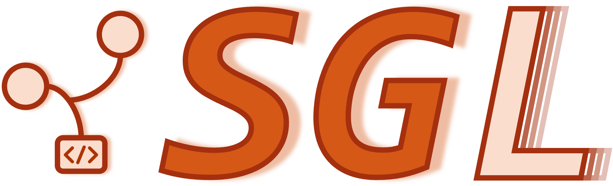
SGLang은 구조화된 생성(structured generation)과 에이전트 애플리케이션을 특히 타깃으로 하는 비교적 새로운 진입자입니다. LLM과 비전-언어 모델(VLM)을 위한 오픈소스 고성능 서빙 프레임워크로, 빠른 백엔드 런타임(커널·캐싱·스케줄링)을 유연한 프론트엔드 언어·API(OpenAI 호환 + 네이티브)와 함께 공동 설계해 생성을 더 빠르고 제어 가능하게 만듭니다.
- RadixAttention: 프리픽스/KV 캐시 재사용을 여러 호출에 걸쳐 radix tree(접두사 트리) 구조로 관리합니다. 반복적인 프리픽스가 많은 에이전트·멀티턴 시나리오에서 강점을 보입니다.
- 핵심 기능: 연속 배칭, 페이지드 KV, 추측 디코딩(EAGLE-2/3), 청크드 프리필, 구조화된 출력, 멀티-LoRA, 다양한 병렬화(TP/PP/EP/DP).
- 하드웨어 지원: NVIDIA뿐 아니라 AMD Instinct, CPU, TPU, Jetson Orin, Ascend까지 — TensorRT-LLM보다 훨씬 폭넓습니다.
llm = sgl.Engine(model_path="Qwen/Qwen3-7B")
sampling_params = {"temperature": 0.8, "top_p": 0.95}
outputs = llm.generate(prompts, sampling_params)| 항목 | vLLM | SGLang |
|---|---|---|
| 핵심 최적화 | PagedAttention, Scheduler 중심 | RadixAttention, 구조화 생성 중심 |
| 하드웨어 폭 | 주로 NVIDIA 중심(확장 중) | 초기부터 멀티벤더 지향 |
| 주요 타깃 | 범용 LLM 서빙 | 에이전트/구조화 출력 워크로드 |
성능은 vLLM과 경쟁력 있는 수준이지만, vLLM이 아직 더 넓은 커뮤니티·생태계를 갖고 있다는 것이 현재 시점의 주요 차이로 언급됩니다.
vLLM의 PagedAttention이 "각 요청마다 자기만의 냉장고 칸을 페이지 단위로 배정"하는 방식이라면, SGLang의 RadixAttention은 그 냉장고 칸들을 접두사(prefix) 트리(radix tree)로 정리해 여러 손님이 공통으로 쓰는 밑준비 재료(같은 시스템 프롬프트, 같은 few-shot 예시, 같은 대화 앞부분)를 한 번만 만들어 공유합니다. 새 요청이 들어오면 트리를 타고 내려가며 "이미 준비된 부분"까지는 그대로 재사용하고, 갈라지는 지점부터만 새로 계산합니다(내부적으로 copy-on-write로 캐시 블록을 나눠 쓰다가 실제로 달라지는 시점에만 복사). 그래서 같은 시스템 프롬프트를 매번 재사용하는 챗봇·RAG·멀티턴 에이전트처럼 접두사가 많이 겹치는 워크로드에서 특히 유리합니다.
📊 실측 벤치마크로 본 SGLang vs vLLM
SGLang 공식 논문 [4]은 에이전트 제어·논리 추론·멀티턴 대화처럼 접두사 재사용이 많은 워크로드에서 기존 최고 수준 시스템 대비 최대 6.4배 처리량 향상을 보고했습니다. 이후 커뮤니티 벤치마크(Llama 3.3 70B FP8, H100 1장, 2026년 기준)에서도 접두사가 많이 겹치는 조건에서 SGLang이 처리량 16,200 tok/s vs vLLM 12,500 tok/s(+29%), TTFT 79ms vs 103ms(23% 단축), 토큰 간 지연(ITL) 6.0ms vs 7.1ms(15% 단축)로 우위를 보였습니다. 다만 겹치는 접두사가 전혀 없는(각 요청이 완전히 독립적인) 워크로드에서는 이 격차가 5% 이내로 줄어듭니다 — RadixAttention의 이득은 "얼마나 캐시를 재사용할 수 있는 트래픽 패턴인가"에 전적으로 달려 있다는 뜻이며, 벤치마크 수치 자체보다 내 워크로드의 접두사 재사용률을 먼저 측정하는 것이 중요합니다.
§1.1에서 언급한 "96 GPUs · DEEPSEEK REPRODUCTION" 사례의 실제 수치입니다. SGLang 팀은 H100 96장(12노드×8장)에 PD 분리와 대규모 Expert Parallelism을 적용해 DeepSeek-V3/R1 서빙을 재현, 2,000토큰 입력 기준 노드당 초당 52,300개 입력 토큰 / 22,300개 출력 토큰을 처리했습니다. 이를 자체 인프라에 배포할 경우 비용은 100만 출력 토큰당 약 $0.20로 환산되며, 이는 당시 DeepSeek 공식 Chat API 비용의 약 1/5 수준이라고 보고됩니다(단, 이 비용은 해당 하드웨어·클라우드 조달가를 전제로 한 자체 배포 추정치이며 보편적인 API 가격표는 아닙니다).
보강: SGLang Cookbook — 하드웨어·양자화·추측 디코딩을 골라 검증된 실행 커맨드를 즉시 생성: SGLang 공식 사이트는 Kimi(Moonshot AI)·GLM·Qwen·DeepSeek 등 다양한 모델 제공사별로 "Hardware Platform(Blackwell GB300/DGX Spark/RTX PRO 6000/RTX 5090, Hopper H200 등) × Quantization(BF16/FP8/NVFP4) × Speculative Decoding(None/EAGLE/DSPARK/DFLASH2) × Serving Strategy(Low-Latency/High-Throughput)"를 조합하면 검증된 sglang serve 커맨드를 바로 생성해주는 인터랙티브 설정기(Cookbook)를 제공합니다.
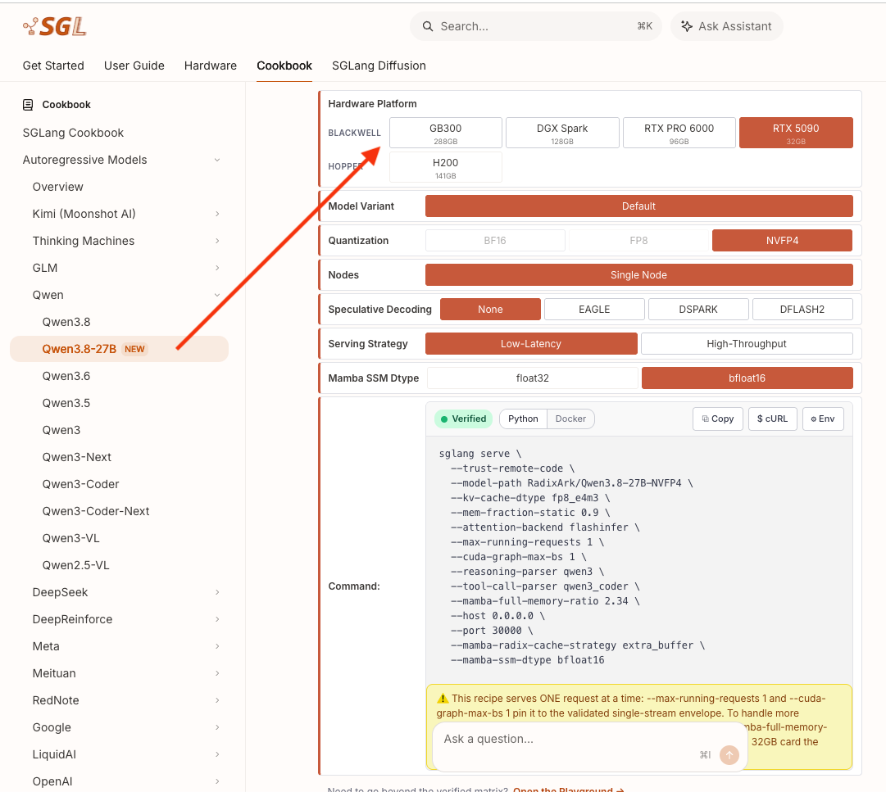
--kv-cache-dtype fp8_e4m3 --attention-backend flashinfer --reasoning-parser qwen3 --tool-call-parser qwen3_coder --mamba-ssm-dtype bfloat16 같은 플래그로 보아, SGLang이 Mamba/하이브리드 SSM 아키텍처 모델과 구조화된 도구 호출(tool-call)·추론(reasoning) 파싱까지 네이티브 지원한다는 것을 알 수 있습니다 — 실행 명령어 하나가 아니라, 다양한 최신 하드웨어·모델 조합을 웹에서 골라 검증된 명령을 바로 복사해 쓸 수 있는 "레시피 사이트"입니다.4.1 사이오닉 직원의 SGLang 서빙 실전 케이스북
원문에 포함된 실제 운영 경험 기반 인사이트 [5]를 빠짐없이 정리하면 다음과 같습니다.
- TP 크기는 클수록 좋은 게 아니다: TP는 개별 요청 지연은 낮추지만 통신 비용을 늘리고 병렬 배치 기회를 줄입니다. ITL SLO에 여유가 있다면 TP를 줄이고 DP 복제를 늘리는 쪽이 처리량과 TTFT 양쪽에서 유리할 수 있습니다 — 이 트레이드오프는 케이스마다 결론이 달라지므로 반드시 실측으로 확인해야 합니다.
- 캐시 인지 라우팅의 효과: 같은 하드웨어에서 라우팅 정책 하나만 바꿔도 TTFT가 2.8배 차이 났습니다. 접두사 공유가 큰 워크로드에서 라운드로빈은 캐시를 무력화하므로, 워커를 늘리기 전에 라우팅부터 점검해야 합니다.
- 프롬프트 구조가 인프라 설정보다 큰 효과를 낼 수 있다: 변하는 값을 프롬프트 앞에서 뒤로 옮긴 것만으로 TTFT를 절반으로 줄일 수 있었습니다. 서빙팀과 애플리케이션팀이 분리되어 있으면 이런 문제를 아무도 발견하지 못할 수 있습니다.
- HiCache는 중앙값보다 꼬리값을 개선한다: 이미 캐시가 잘 히트되는 요청은 그대로이고 미스가 날 때 복원되는 구조이므로, p99 SLO가 있는 서비스에서 특히 가치가 있습니다.
- 계층 캐시는 도입 전에 손익분기를 계산해야 한다: 계산 속도 대비 전송 비율이 1을 넘지 않으면 순손해입니다(물론 계산 자원이 부족한 경우는 별개).
- 불필요한 투기적 디코딩 제거: 출력보다 입력(prefill) 최적화가 필요한 워크로드라면 decode 최적화 기법인 추측 디코딩은 효과가 없어 제거하는 것이 맞습니다 — 7장에서 다룬 "prefill에는 무효"라는 한계가 실전에서도 그대로 확인된 사례입니다.
- 모델 선정이 모든 설정 튜닝의 합보다 효과가 크다: 27B→9B로 모델을 한 번 바꾼 것만으로 2.75배 이득을 봤고, 이후 세 라운드의 설정 튜닝을 다 합쳐도 1.6배였습니다 — 튜닝을 시작하기 전에 "이 작업에 이 모델 크기가 정말 필요한가"를 검증셋으로 먼저 확인해야 합니다.
- 구조화 출력이 오히려 처리량을 올릴 수 있다: 점프-포워드 디코딩이 스키마상 정해진 토큰을 모델 호출 없이 방출하므로, 구조 비중이 큰 JSON 출력은 제약 없는 생성보다 빠릅니다. 제약을 비용으로만 생각하면 이 이득을 놓칠 수 있습니다.
- MoE·Dense의 유불리는 워크로드로 갈린다: 출력이 길고 동시성이 작은 케이스에서는 Dense가, 출력이 짧고 배치가 큰 케이스에서는 MoE가 유리했습니다. 판단 기준은 "배치가 임계 배치에 얼마나 가까운지"와 출력 길이입니다.
- 대형 MoE 대규모 서빙의 노드 수 계산: 노드 4개(32 GPU)로 묶는 이유는, FP8 기준 284GB 가중치를 담으려면 H200(141GB) 최소 3장이 필요하지만 그러면 KV 캐시 여유가 거의 없기 때문입니다. 전문가 256개를 GPU당 8개씩 균등 배분하려면 32 GPU가 필요하며, 인스턴스를 더 크게 묶으면 all-to-all 통신 범위가 넓어져 노드 간 InfiniBand를 더 많이 타게 됩니다 — 32 GPU(4노드)면 통신의 상당 부분이 노드 내부 NVLink에서 처리됩니다.
- 병렬화 전략이 대형 MoE의 원가를 지배한다: 같은 하드웨어에서 단순 TP 구성과 EP+PD 분리 구성의 원가 차이가 3배에 달했습니다.
5. llama.cpp
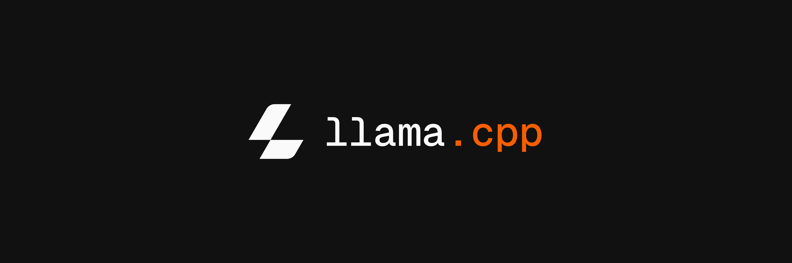
Llama.cpp는 노트북·워크스테이션부터 온프레미스 서버, 엣지 디바이스까지 거의 모든 머신에서 최신 오픈 웨이트 LLM을 효율적으로 실행하도록 만들어진 가벼운 오픈소스 C/C++ 추론 스택입니다.
| 항목 | 내용 |
|---|---|
| 구현 | 가벼운 C/C++ 스택, 최소 의존성, 빠른 시작 |
| 모델 포맷 | GGUF (Hugging Face 체크포인트에서 변환) |
| 양자화 | 공격적인 2~8비트 정수 양자화 |
| 하드웨어 | CPU(SIMD) 기본, Metal/CUDA/ROCm/Vulkan 선택적 가속 |
| 인터페이스 | 내장 OpenAI 호환 HTTP 서버 + CLI, llama_cpp 파이썬 바인딩 |
| 상위 래퍼 | Ollama가 llama.cpp를 감싸 더 쉬운 REST API 경험 제공 |
from llama_cpp import Llama
llm = Llama.from_pretrained(repo_id="Qwen/Qwen3-8B-GGUF", filename="*Q8_0.gguf")
output = llm("Q: 태양계 행성 이름은? A:", max_tokens=32, stop=["Q:", "\n"])모델은 GGUF 포맷으로 패키징되며, 최소한의 의존성, 빠른 시작 시간, 공격적인 정수 양자화, 이식 가능한 CPU/GPU 백엔드 집합을 강조합니다. llama.cpp를 차별화하는 것은 "어디서나 실행된다"는 철학과 매우 작은 운영 부담입니다. vLLM·TensorRT-LLM·SGLang이 데이터센터 GPU에서의 고처리량·저지연 서빙을 최우선으로 최적화한다면, llama.cpp는 이식성·단순성·비용 효율성을 우선시합니다.
3가지 사용 시나리오: ① 로컬 개발 — 내장된 OpenAI 호환 서버를 자신의 머신에서 실행하고 기존 클라이언트(RAG, 검색 시스템 등)를 그대로 재사용, ② 프라이빗·온프레미스 어시스턴트 — 모든 데이터를 VPC·디바이스 경계 내부에 유지, ③ 엣지 추론 — 노트북·데스크톱·Apple Silicon·소형 서버에서 2~8비트 양자화와 이식 가능한 백엔드로 가능.
모든 LLM 애플리케이션이 고처리량 서빙을 필요로 하는 것은 아닙니다. 로컬(온디바이스·온프레미스 엣지)에서 실행할 때는 목표가 달라집니다 — 플릿 전체의 초당 토큰 수가 아니라 지연시간·응답성을 최적화하고, 낮은 동시성(흔히 단일 사용자)이므로 대규모 배칭의 가치가 줄어들며, 메모리·전력 풋프린트와 비용이 주요 제약이 되고, 프라이버시·오프라인 신뢰성이 최우선이 됩니다. llama.cpp는 정확히 이 프로필에 들어맞습니다.
보강: "경량 텍스트 전용"을 넘어선 최근 llama.cpp — 실제 CLI·웹 UI 스크린샷을 확인한 결과, llama.cpp는 이제 텍스트 전용 추론 스택이라는 설명을 넘어서는 기능을 갖추고 있습니다.
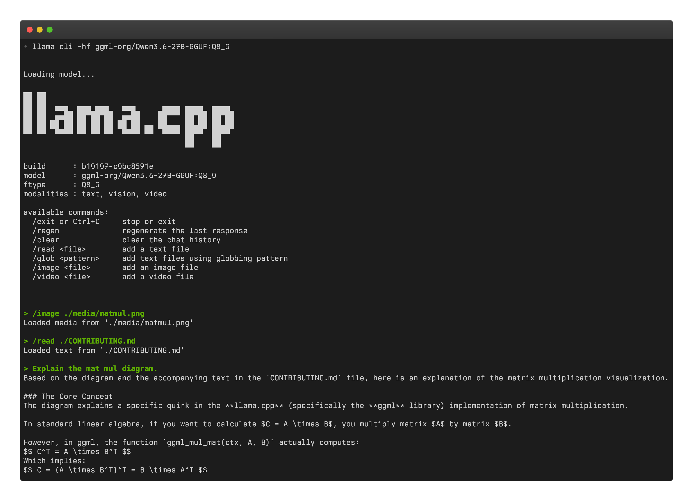
llama cli -hf ggml-org/Qwen3.6-27B-GGUF:Q8_0로 GGUF 양자화(Q8_0) 27B 모델을 로드하면 modalities: text, vision, video가 표시되고, /image·/video 슬래시 명령으로 이미지·동영상을 대화에 직접 첨부할 수 있습니다. 예시에서는 /image ./media/matmul.png로 다이어그램을 첨부해 "Explain the mat mul diagram"이라고 묻자, 모델이 llama.cpp 고유의 ggml_mul_mat(ctx, A, B) 행렬곱 관례(C = B × Aᵀ, 일반적인 선형대수 관습과 다름)를 설명합니다 — llama.cpp CLI가 텍스트뿐 아니라 비전·비디오 모달리티까지 지원하는 멀티모달 도구로 발전했음을 보여줍니다.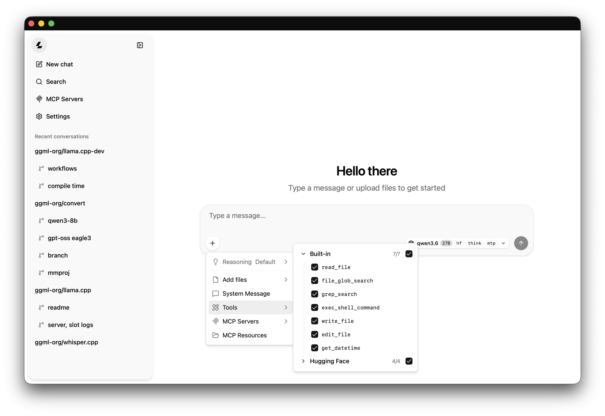
6. 서빙 프레임워크 선택 가이드
프레임워크 선택은 "어느 것이 절대적으로 최고인가"가 아니라 내 워크로드와 운영 조건에 맞는가를 기준으로 해야 합니다.
6.1 평가 6단계
- 기능이 아니라 SLO부터 시작: 지연시간(TTFT, p95/p99), 처리량(TPS/QPS), 토큰당 비용, 품질 제약, 가용성 목표를 적어둡니다.
- 실제 사용 사례의 프롬프트를 분석: prefill 위주인지 decode 위주인지, 컨텍스트 길이, 도구 호출·멀티턴 체인 포함 여부를 명확히 합니다.
- 동일 조건으로 비교: 같은 모델, dtype/양자화, 최대 시퀀스 길이, 배치/동시성, 스트리밍 설정으로 사과 대 사과 비교를 합니다.
- 운영성을 측정: 콜드 스타트 시간, 관측 가능성, 오토스케일링 동작, 멀티테넌시 공정성, 업그레이드 마찰, 장애 모드.
- 하드웨어와 벤더 종속을 고려: 여러 벤더(NVIDIA/AMD/CPU/TPU/엣지)를 쓴다면 이식성이 중요해집니다.
- 변화를 계획: 모델 교체와 새로운 디코딩 기법은 매주 일어날 수 있으므로, 큰 수술 없이 업데이트할 수 있는 프레임워크를 선택합니다.
6.2 최종 선택 가이드
| 상황 | 추천 | 이유 |
|---|---|---|
| 빠른 프로덕션 배포, 폭넓은 모델 커버리지, 파이썬 네이티브 워크플로우 | vLLM | 강력한 기본 성능, 연속 배칭, 가장 큰 커뮤니티·생태계 |
| 에이전틱·다단계 워크플로우, 엄격한 JSON/정규식 출력, 다중 벤더 이식성 | SGLang | 프리픽스/KV 재사용, 추측 디코딩, 스케일아웃 라우터 |
| NVIDIA와 서빙 스택에 완전히 올인, 대규모에서 달러당 최고 토큰 수 | TensorRT-LLM | Triton·Dynamo 통합, 깊은 CUDA/Tensor Core 최적화 |
| 로컬·온프레미스·엣지 서빙, 작은 풋프린트·저비용·기본 프라이버시 | llama.cpp | GGUF 양자화(2~8비트), 이식 가능한 경량 CPU/GPU 백엔드 |
💡 이 선택은 일회성 결정이 아니라 지속적인 재평가 과정이어야 합니다. LLM 서빙 생태계가 매달 바뀌므로, 3~6개월 주기로 프레임워크를 재검토하고 프레임워크 추상화 레이어·탈출 계획을 마련해 앱 코드를 다시 쓰지 않고도 프레임워크를 교체할 수 있어야 합니다. 목표는 "영원한 승자"를 정하는 것이 아니라 유연성을 유지하는 것입니다 — 이는 앞서 다룬 vLLM의 "계층화된 최적화" 철학(변화에 대비해 시스템을 설계)과 같은 맥락의 원칙입니다.
핵심 요약
flowchart TD
A["범용 서빙 스택의 한계\n(1절)"] --> B["vLLM 심층 분석\nScheduler 중심 아키텍처\n(2절)"]
B --> C1["TensorRT-LLM\nNVIDIA 특화\n(3절)"]
B --> C2["SGLang\n구조화 생성/멀티벤더\n(4절)"]
B --> C3["llama.cpp\n경량/이식성\n(5절)"]
C1 --> D["프레임워크 선택 가이드\nSLO 기반 평가 6단계\n(6절)"]
C2 --> D
C3 --> D
- 범용 ML 서빙 스택이 LLM에는 부족한 이유는 토큰 단위 스케줄링, KV 캐시 관리, 긴 컨텍스트 처리, 스트리밍 우선 실행 같은 LLM 특화 기능이 결여되어 있기 때문입니다.
- vLLM은
LLMEngine → EngineCore → Scheduler → ModelExecutor → GPUWorker → GPUModelRunner흐름과, Scheduler/ModelExecutor/모델 레이어/CustomOp로 이어지는 계층화된 최적화 전략으로 시스템 전반 최적화와 모델·커널 레벨 특화를 분리합니다. - TensorRT-LLM(NVIDIA 최고 효율), SGLang(멀티 벤더·구조화 출력), llama.cpp(경량·이식성)는 서로 다른 트레이드오프를 가진 대안이며, "어떤 프레임워크가 최고인가"가 아니라 "내 상황(SLO, 하드웨어, 워크로드)에 어떤 프레임워크가 맞는가"를 물어야 한다는 것이 이 장의 결론입니다.
참고 자료
- Yu et al., "Orca: A Distributed Serving System for Transformer-Based Generative Models", OSDI 2022 — USENIX
- Kwon et al., "Efficient Memory Management for Large Language Model Serving with PagedAttention", SOSP 2023 — arXiv:2309.06180
- Aleksa Gordić, "Inside vLLM: Anatomy of a High-Throughput LLM Inference System" — Blog
- Zheng et al., "SGLang: Efficient Execution of Structured Language Model Programs" — arXiv:2312.07104
- 사이오닉(Sionic AI) 직원, SGLang 서빙 실전 케이스북 — GitHub
- [PY] 07 - LLM 추론의 공학: 프로덕션 환경에서의 서빙 — YouTube
- Sheng et al., "Fairness in Serving Large Language Models"(Virtual Token Counter), OSDI 2024 — arXiv:2401.00588
- Qin et al., "Mooncake: Trading More Storage for Less Computation — A KVCache-centric Architecture for Serving LLM Chatbot", USENIX FAST 2025(Best Paper) — arXiv:2407.00079
- SGLang Team, "Deploying DeepSeek with PD Disaggregation and Large-Scale Expert Parallelism on 96 H100 GPUs", LMSYS Blog(2025-05-05) — lmsys.org